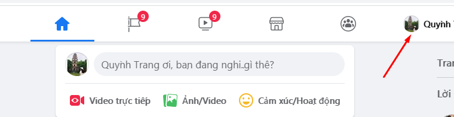
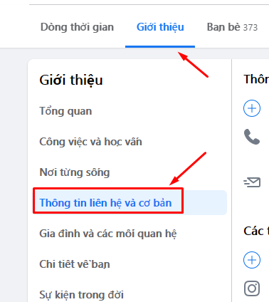
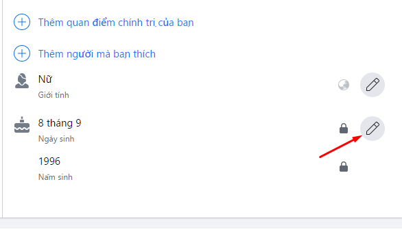
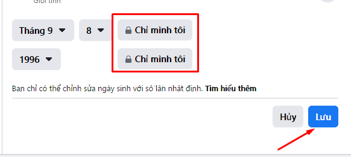
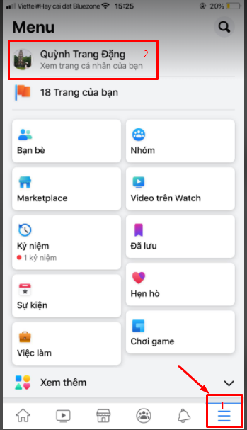
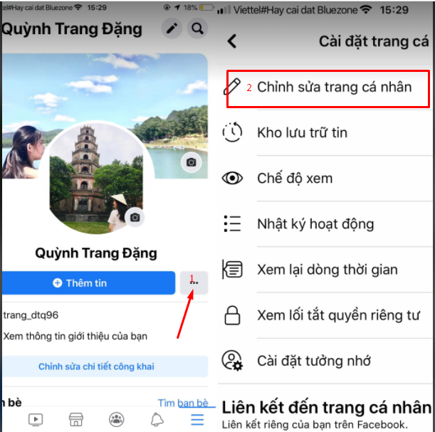
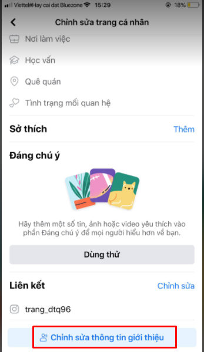
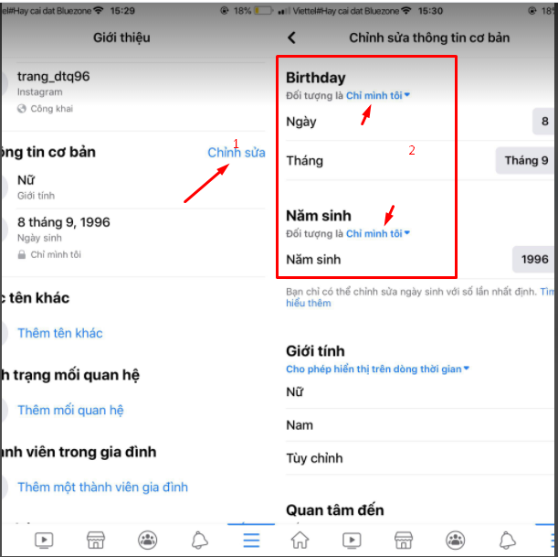

Cách BẬT, TẮT, ẨN thông báo sinh nhật trên Facebook nhanh nhất

Ty Nguyen
CEO ❤️ AhaChat. Love babies & chatbot.
Mạng xã hội Facebook được mọi người biết đến là nơi chia sẻ các thông tin và bạn bè, người thân có thể thông qua facebook quan tâm nhau để trở nên gần gũi hơn mặc dù không ở gần nhau. Đặc biệt, mỗi khi đến ngày sinh nhật của bạn, Facebook sẽ gửi thông báo đến tất cả những người nằm trong danh sách bạn bè của bạn để họ có thể chúc mừng sinh nhật bạn. Tuy nhiên, một số người dùng Facebook lại không thích công khai ngày sinh nhật của bản thân trên mạng xã hội. Vậy muốn tắt hay bật thông báo sinh nhật trên Facebook phải làm thế nào? Bài viết dưới đây sẽ giúp bạn trả lời cho câu hỏi đó, cùng theo dõi nhé!
1. Cách tắt/bật thông báo sinh nhật trên Facebook trên web
Để tắt thông báo sinh nhật trên Facebook thông qua web, bạn làm theo các bước như sau:
- Bước 1: Bạn truy cập vào website Facebook, đăng nhập vào tài khoản Facebook cá nhân của bạn. Tại giao diện trang chủ click chuột vào ảnh đại diện của bạn để vào Trang cá nhân.

- Bước 2: Vào Trang cá nhân, chọn mục Giới thiệu sau đó chọn mục Thông tin liên hệ và cơ bản ở menu bên trái.

- Bước 3: Vào phần Thông tin liên hệ và cơ bản, di chuột xuống phía dưới sẽ thấy mục Ngày sinh, bạn click chuột vào biểu tượng bút để chỉnh sửa quyền riêng tư

- Bước 4: Thay đổi ngày sinh và năm sinh về quyền riêng tư chỉ mình tôi, sau đó ấn Lưu

Sau khi bạn chỉnh quyền riêng tư ngày tháng năm sinh về chỉ mình tôi, Facebook sẽ không còn thông báo cho những người nằm trong danh sách bạn bè của bạn về ngày sinh nhật bạn. Như vậy là bạn đã tắt thông báo ngày sinh nhật trên Facebook thông qua web thành công rồi nhé.
Để bật hiển thị ngày sinh nhật trở lại bạn cũng làm các thao tác tương tự rồi lựa chọn chia sẻ Công khai hay chỉ với Bạn bè hay chỉ Người quen…
2. Cách bật/ tắt thông báo sinh nhật Facebook thông qua ứng dụng Facebook trên điện thoại
Nếu bạn không muốn truy cập facebook từ trang web, bạn có thể tắt thông báo sinh nhật qua ứng dụng Facebook ngay trên điện thoại của bạn. Cách thực hiện như sau:
- Bước 1: Bạn mở ứng dụng Facebook trên điện thoại di động của bạn. Biểu tượng Facebook trên ứng dụng điện thoại là hình chữ “f” màu trắng nền xanh.
- Bước 2: Đăng nhập vào tài khoản Facebook cá nhân của bạn, khi đăng nhập xong giao diện trang chủ của Facebook xuất hiện.
Tại giao diện trang chủ, bạn bấm chọn biểu tượng 3 gạch ngang ở góc phải phía dưới màn hình và nhấp vào xem trang cá nhân của bạn

- Bước 3: Vào giao diện Trang cá nhân, nhấp vào dấu 3 chấm, lúc này xuất hiện giao diện Cài đặt trang cá nhân

- Bước 4: Tiếp theo, bạn kéo xuống cuối cùng nhấn vào Chỉnh sửa thông tin giới thiệu

- Bước 5: Cuối cùng, Vào mục chỉnh sửa thông tin cơ bản để chỉnh sửa ngày tháng năm sinh của bạn về quyền riêng tư chỉ mình tôi.

Như vậy là chỉ với vài bước cơ bản, bạn đã có thể tắt được thông báo sinh nhật của bạn trên Facebook bằng ứng dụng Facebook trên điện thoại rồi nhé.
Để bật hiển thị ngày sinh nhật trở lại bạn cũng làm các thao tác tương tự rồi lựa chọn chia sẻ Công khai hay chỉ với Bạn bè hay chỉ Người quen…
Bài viết trên đây đã hướng dẫn bạn cách bật/ tắt thông báo sinh nhật trên Facebook thông qua ứng dụng trên điện thoại và trên máy tính. Hy vọng với những chia sẻ đó hữu ích đối với bạn. Nếu có bất kỳ thắc mắc hay góp ý gì thì đừng quên để lại bình luận dưới đây để chúng tôi có thể hỗ trợ bạn nhé. Chúc bạn thành công!